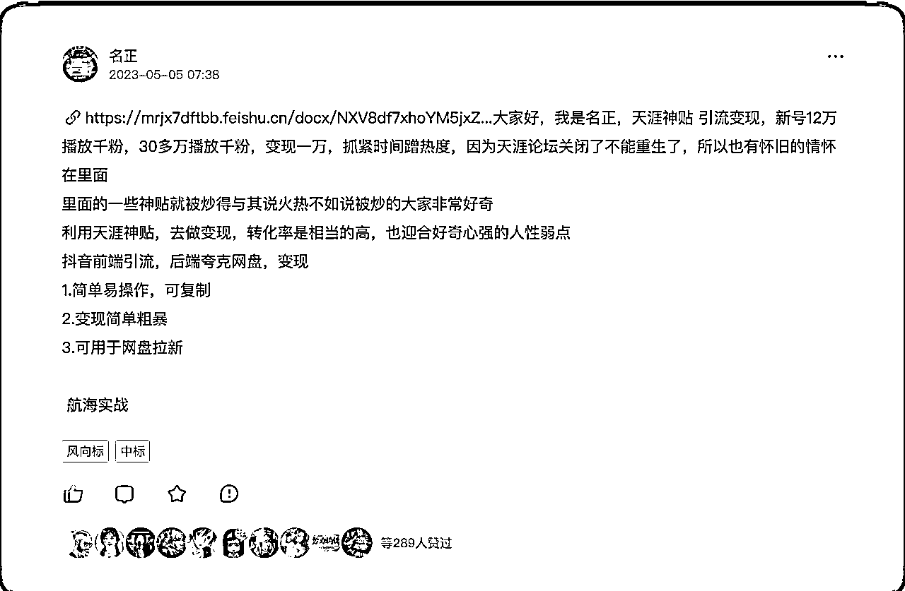
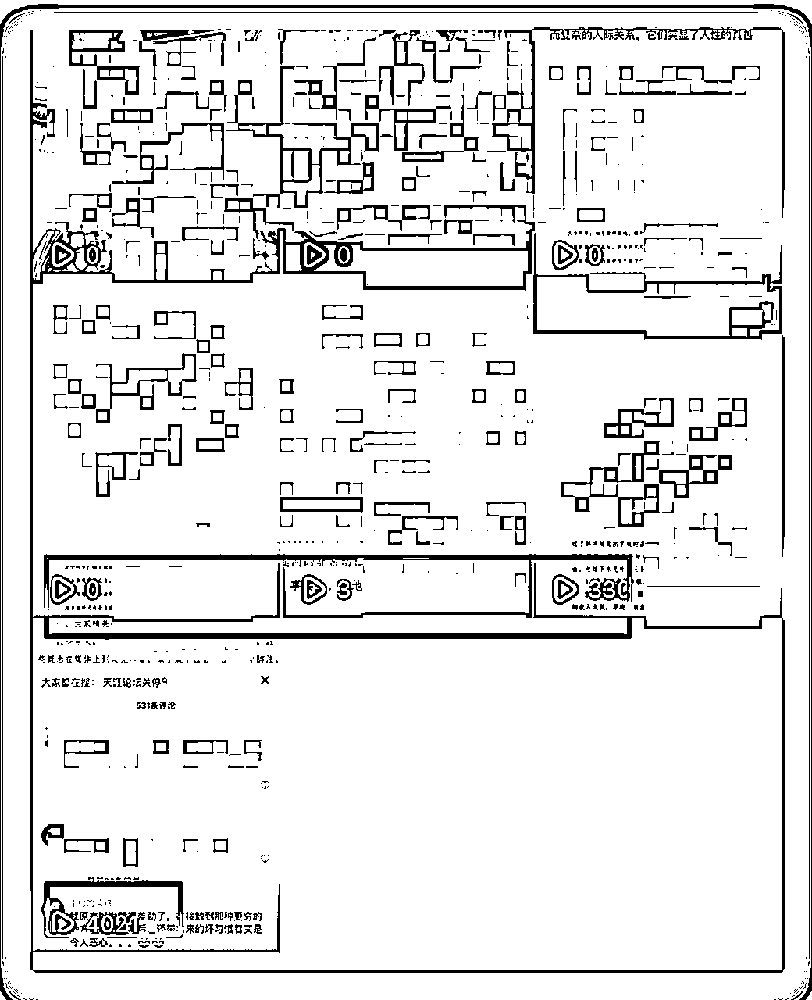
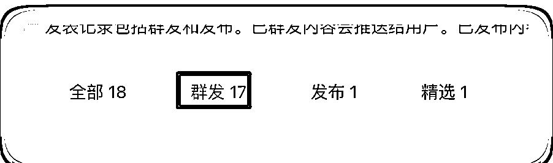
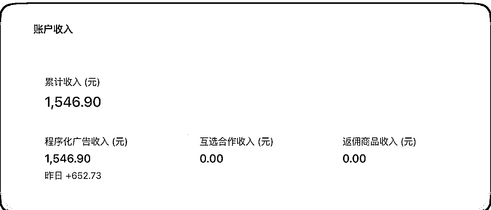
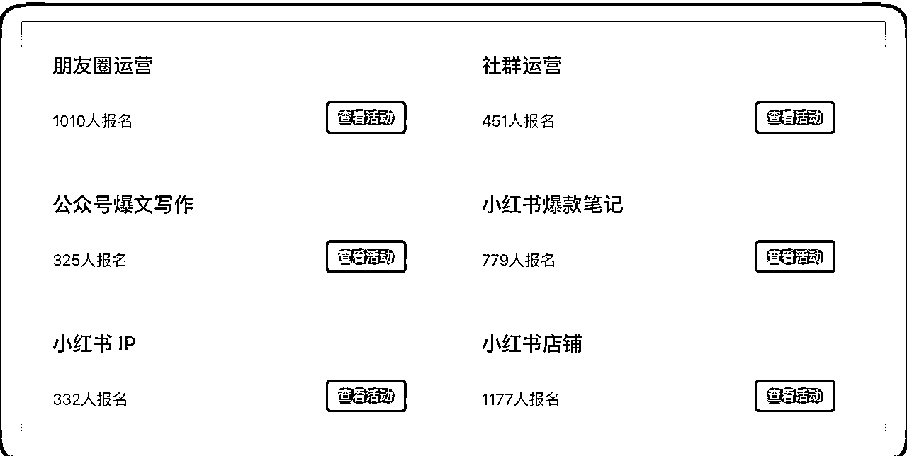
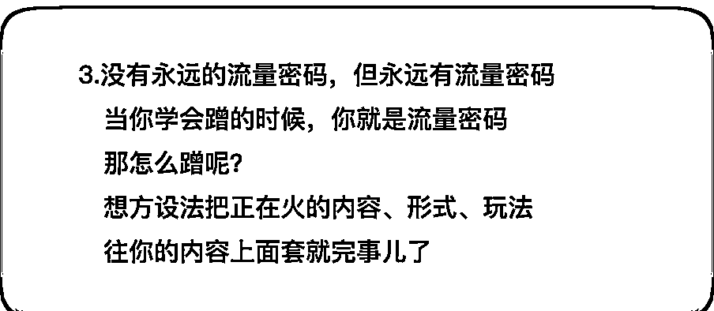
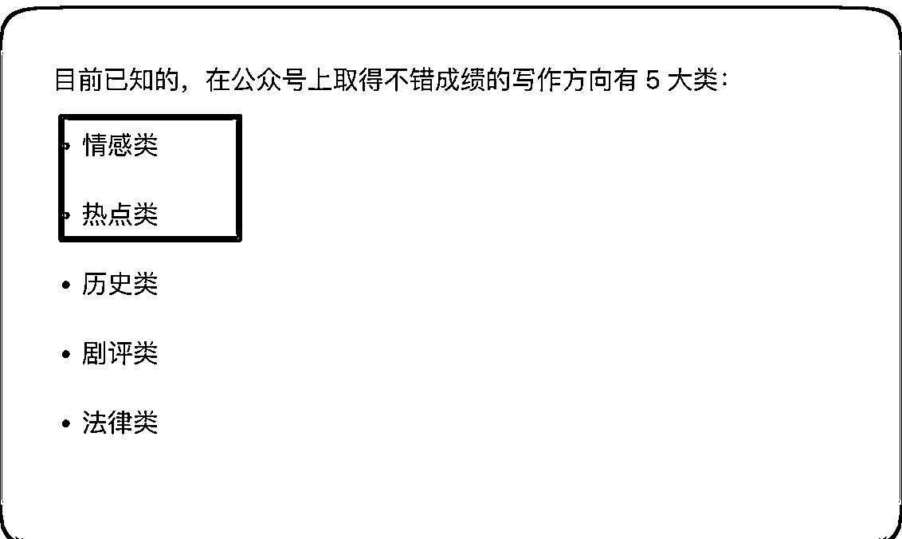

来源：https://y3my0b87ql.feishu.cn/docx/Bw25drexlowoYaxyqWwc1BZDnbc
大家好，我是小叉，又来了。
作为生财有术的新人，第一份项目完全没能跑通，这无疑给我的信心带来了重创。但是，我并没有就此放弃。在随后的一个个小的尝试中，我逐渐积累了正面的反馈和经验。这些点点滴滴的成功体验，慢慢帮助我重新建立起自信。
失败的经历虽然痛苦，但它带给我的启示更加宝贵。我带着这些经验教训，继续在生财有术的项目中努力实践与探索。一次次的尝试，让我逐步找到了自己的方向和项目。
我这次用自己的亲身经历，贴身的经验分享，带大家一起感受一个新人从首遭滑铁卢，挫败感拉满，然后恢复自信，继续下一个实操，并最终完成自己的年度目标。
那就开始吧。第一个是项目是执行「天涯帖」的 SOP，以失败告终，完全没有跑通，获得宝贵的经验和教训。如何面对失败，建立自信，再次参加航海，不仅赚到自己的在生财的第一桶金，关键还链接了不少优秀的同路人。
先说结果：这个项目，一分钱没有找到，不过学到了几个用钱也买不来的经验。
看到天涯贴的风向标：https://t.zsxq.com/0eHNGJtfQ，应该大部分和我一样，觉得特别的简单，只要有手机，就能上？

肯定大家都猜到结果了，最后我是失败的。
失败了不要气馁，找找自己的原因。
后来看了@付一 精华帖 https://t.zsxq.com/0ekE2eEyp。在这里不得不说，生财里面，大家都是愿意无私的分享出来，特别很多的精华帖你们的坑，给我们总结的非常的清晰。
比如之前@杨涛 涛哥的创业手册：https://t.zsxq.com/0elXzxM5B，我进来之后看的第一篇精华帖，里面提到了很多的坑，以及精细化运营的点子。
在市面上，给钱也学习不到的信息，加入生财免费学习，爽。
说回来，我为什么会失败，别人能成功。
对于新人来说，先赚一元钱，积累自己的正反馈。

对于别人能跑通的项目，自己在跑的时候，需要注意些一些细节上的问题。比如这次，如果我不下场，始终也不知道养号这个细节是需要注意的，如果后面我参与小红书，那我 100%记得这个坑。需要在每一次试错的过程中总结，虽然试错的成本为 0，但是也有时间成本。
加入生财，直接看精华帖就完了。
失败在所难免，重要是收获，如何调整心态，继续上路找到自己的方向。
失败，对我这种新人来说，几乎是家常便饭。
眼睛看懂了，不代表手就会了，很多按照 SOP ，实操时候，一步一步的做，难度也没有那么难。要怀揣着一颗赚钱的心，但却常常在首战就输得一败涂地。
我经常看精华帖，里面的个个大佬，都是月入几十万，几百万的，月入几千的几乎看不到，时常焦虑不安，试想一下，是不是所有人一出生就是这样喃，第一次实战就能获得这么好的成绩喃？
我想大部分人都可以一样，首战失败是常态。（@梁靠谱 之前分享了一篇关于失败的案例总结，可以看出来，也有太多的失败。）
我和大家一样，失败了一样很沮丧，但是生活还得继续，别忘了加入生财的目的，就是为赚钱的，不是为了沮丧的。
所以既然来了生财有术，就要做好失败的准备，重点是我们能从中汲取什么。失败之后，很多人就再也不敢尝试了，我也从很多的精华帖里面看到，大佬也有失败的时候。
但真正的生财高手，却能在每一次失败后迅速调整状态，继续投入新项目。这种韧性与学识，才是打开生财大门的金钥匙。
失败是常态，重要的是收获。要学会从失败的痛苦中觉醒，找出自己的不足与提高空间。要学会在失败的满地狼藉中寻找可采纳的教训与启发，这些都是下一次胜利的基石。
生财路上从未是一帆风顺，重要的是学会哪里跌倒，哪里爬起来，然后飞翔。没失败几次，哪会知道成功的滋味？
心灵按摩到此结束。
来吧，继续干吧！别忘了你来生财的目的。不要被首战的失败打败，那不过是生财有术行程中必经之路。失败之后，迅速调整心态，总结教训，继续出发。
这里有太多愿意提供帮助的前辈，静静的看他们的精华帖，就像和他们面对面请教样。
调整好心态，继续干就完了。
先说结果：加入了 5 月份的「ChatGPT+ 自媒体的」航海活动，到目前发了发布了 13 文章，截止到目前收入 1500+ 元，差不多就是每天刚好 3 位数的收入，这是一个小的正反馈。

总收入来到了 4 位数。

找到自己的优势，和擅长的领域，然后报名参与与之匹配的航海活动。
找到自己的优势，和可以结合的航海项目，注意这里只是列出自己优势、可以支配的资源，以及喜欢的技能，或者不是讨厌的事情；这里不得不说@醒醒同学 的盖洛普优势分析也非常有用，如果对自己不是很了解的，可以付费分析下。
大部分人新人应该和我一样，觉得自己是一个普通人，有啥优势呀。纯一个萌新，超级普通。如果找不到优势、资源啥的，这里还有一个不是自己讨厌的事情，也可以加到这个里面，这样就有了跟多的选项了。
下面是我的心里路程，作为一个萌新，发现自己的一点小优势、喜欢的技能、可支配的资源、缺点（可选），（为了能找到自己参加的航海，只要是自己喜欢都列出来）
擅长：编程、写作、资源搜索查找、细心……
喜欢的技能：搞钱、英语、脱口秀……
可支配的资源：时间自由，有零花钱可支配…
缺点：社恐，自卑……
不讨厌：搞钱，被人夸……
这里只是举例，不限于自身的，如果不知道可以参考下同行的数据，上面就是来自一个卑微程序员的数据，说不定您还有自己发现不了的优势或者不讨厌的事情。
在航海开始前，就开始研究各个航海手册的，有人会问，活动都还没开，就可以看到手册了？ 其实这里是看的历史的航海手册。 链接也一起放在这里：https://search01.shengcaiyoushu.com/activity/before

啃完之后，就会发现直播类的，肯定是不适合自己的，没有颜值，又自卑。搞这个简直就是在不熟悉的领域和别人竞争；还有需要投入金钱的，这个也不想操作，成本自己有点控制不住。
我自己是一个程序员，发现对于 ChatGPT 技术相对比较熟悉，精力和能力有限，只选择了一个航海项目。
都说公众号的红利已经过去了，实际上也过去了，平台更趋于稳定，但是要在这个大平台的环境下赚到钱，对于我们这种没有资源（砸钱/找大号推广等）的人来说，相对更公平。
让我想起了，我的领路人，@梁靠谱 谱总，直播的时候说过一句话：“都 2023 年了，我还在做微商喃，也每年赚不少钱。”能让大佬说赚钱的项目，那肯定对我们新人来说，是超级多钱💰了。
没事多看大佬的直播，有意外收获，所以公众号也是如此。
写公众号，要么十年前，要么就是现在。
那么结果就很显而易见了，ChatGPT+ 自媒体（公众号），这个比较符合自己感兴趣的方向。
关于实操如何用 ChatGPT 来写一篇文章，可以看我前不久分享的一篇文： https://t.zsxq.com/0el5ogD1N，文章大纲总结下：
找到热门事件
把上面的 2 步合并到一起，就出一篇文章的内容，然后在修改即可完成。
下面是的这次航海复盘历程：
下面是@姚麻 大佬的一篇精华文章：
想方设法把正在火的内容、形式、玩法，往你的内容上面套就完事儿了。


那一篇 10万阅读就是在 1000 左右。
除了开通广告外，还可以通过标题关键字/词尾优化，达到一个获取流量的途径，有了流量就有了广告收入。用Hugging Face里面的免费模型，然后在 github 或者其他三方找一些开源的数据，训练一波想要的模型，比如儿童漫画/ 程序员特别爱刷的算法动画，等等。
如果你也刚好有这个思路的话，欢迎一起生财有术哦～
关于关键字优化可以看这篇文章：https://t.zsxq.com/0ecXqNhl8
公众号量化操作，搞几个号：https://t.zsxq.com/0eFuwtnK2
从看似简单的 SOP 手册，作为一个新人，没有太多的实操，大概率是会失败的。不要站在岸边观察，必须下场，把自己的手打湿，才能有意外的收获。
从首次实操失败后，进行了深刻的自我反思与心态调整。赚钱是充满荆棘，失败是常态，重要的是学会重新启航。
加入生财前，我定下的年度目标就是首先要赚回门票。没想到，在不到两个月的时间里，我就快完成了这个目标。虽然这笔收入对高手来说可能微不足道，但对我这个生财新人来说，已经是一个大大的正反馈。
在这短短一周内，我不仅赚得生财的第一桶金，还结识了许多志同道合的生财好友，感谢@亦小亮 领队每日的甄选日报，@苏玲 志愿者的每日提醒，@黄小刀 刀姐的鼓励和吹捧，以及@猫爸 @觉迟 等圈友的正反馈，加我直接发红包那种正反馈。太多了，感谢你们。
以及生财的精华帖中，他们中的许多人，都给予我宝贵的意见与帮助。有了这个社群的支持，我对自己继续前行充满信心。
人生的旅途中，遇见同路人是件多么幸运的事儿。特别感谢@梁靠谱 队长的指点，还免费为我们改帖子，在生财，我遇见的不仅是可以一起打怪升级的队友，更是可以心灵契合的知己。认识他们，让我在生财路上豁然开朗，原来赚钱并不孤独，原来生财可以如此充实灵魂。
失败既然不可避免，那么我更加珍视每一次成功。生财带给我的，不仅是金钱的收益，更是找到属于自己的一片天地与心灵的寄托。在这个大家庭里，我找到了重新出发的勇气，也找到了前行的方向。这一切，都让我对生财有术充满感激之情。
不停的干，不停地复盘总结，一起生财有术。